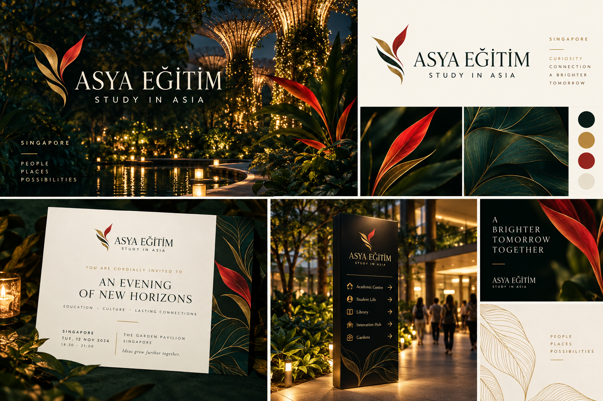
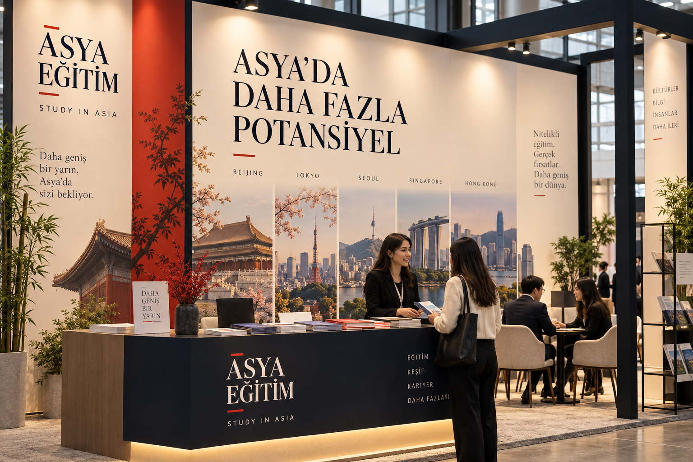
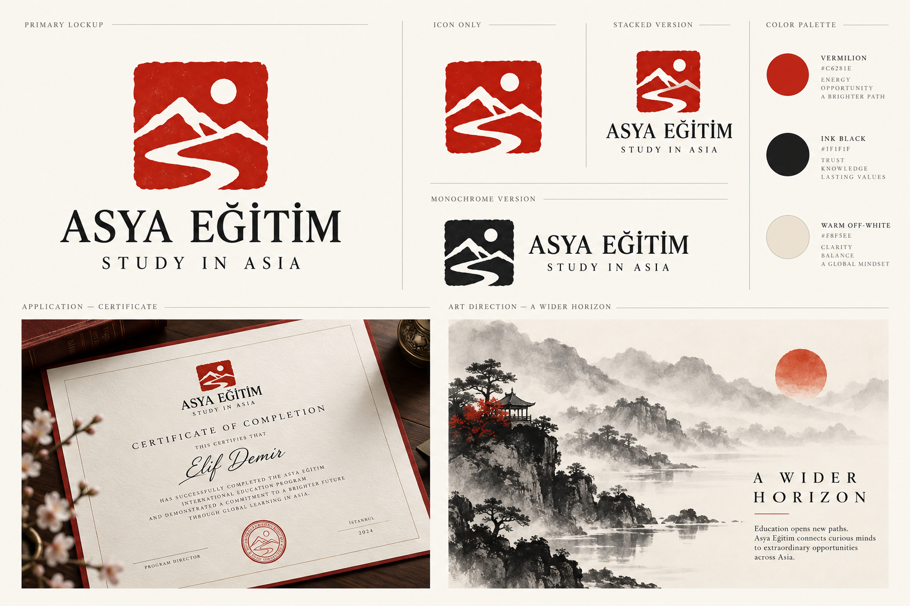
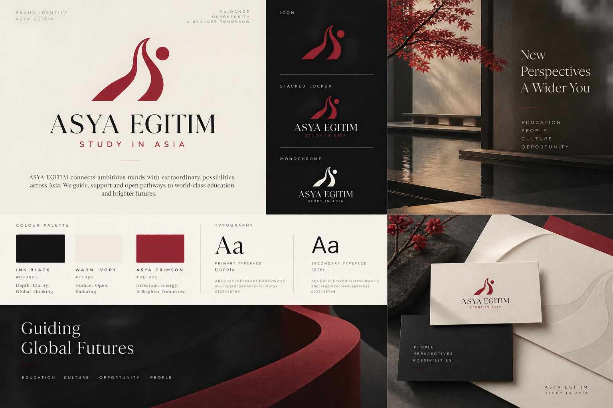

ASYA EĞİTİM · İNCELEME GALERİSİ · SEÇİM BEKLENİYOR
Yön denemeleri
Tura göre değil, tasarım akrabalığına göre kümelendi. Başlıklara tıklayarak açıp kapat.
5 ÜLKE Ülke Dünyaları — Çin · Hong Kong · Japonya · G. Kore · Singapur
Çin — kafes geometrisi + vermilion

Hong Kong — gece-teal + neon mercan

Japonya — ma boşluğu + vermilion

Güney Kore — kobalt/beyaz/kırmızı ritim

Singapur — tropik-modern yeşil + kırmızı

5 ÜLKE-B Ülke Dünyaları — ikinci yorumlar — aynı ülke, farklı cevap
Çin B — gece kampüsü

Hong Kong B — gündüz liman ışığı

Japonya B — sıcak zanaat

Güney Kore B — mürekkep minimal

Singapur B — gece bahçesi

3 SAHNE Uygulama Sahneleri — fuar, ofis, sosyal set
Fuar standı

Danışma ofisi iç mekânı

Sosyal medya üçlüsü

4 MÜHÜR Mühür Dünyaları — Scholar’s Seal referansından
Mühür-soyut (dağ+yol)

Mühür-ızgara (kapı-mühür + sistem)

Mühür-baskı (kırtasiye sistemi)

Mühür-gece (ışıyan koyu zemin)

6 İŞARET Sembol & İşaret Arayışı — fırça, kafes-kare, çizgi-alan, oran-kırığı
Tek fırça hamlesi + disk (sakin)

Çerçeve + diyagonal vuruş (sakin)

Devasa kesik grotesk + erik fırça (cesur)

Fırça-kare işaret, çivit/gri (bilge)

Kemer+güneş geometrisi (cesur rozet)

Grafit bloklar + sinyal kırmızısı (keskin)

2 KELİME Tipografi Ağırlıklı — kelime-markın taşıdığı kimlikler
Serif kelime-mark + kobalt çizgi (rafine)

Modüler grotesk + mineral-kırmızı bar (deneysel)

4 ENERJİ Genç & Güncel Enerji — kampüs, ritim, iyimserlik
Fırça-desen alanı + sinabar odak (ritmik)

Kobalt/turuncu eğik grotesk (parlak)

Erik/krem/lime editoryal miksaj (kültürlü)

Petrol/fildişi/kızıl kesik harf (dışavurumcu)

3 YÖN İlk Yön Kararı — high-aesthetic ilk tur
D1 — Editorial Luxury

D2 — Structural Asia

D3 — Curated Passage SEÇİLEN YÖN